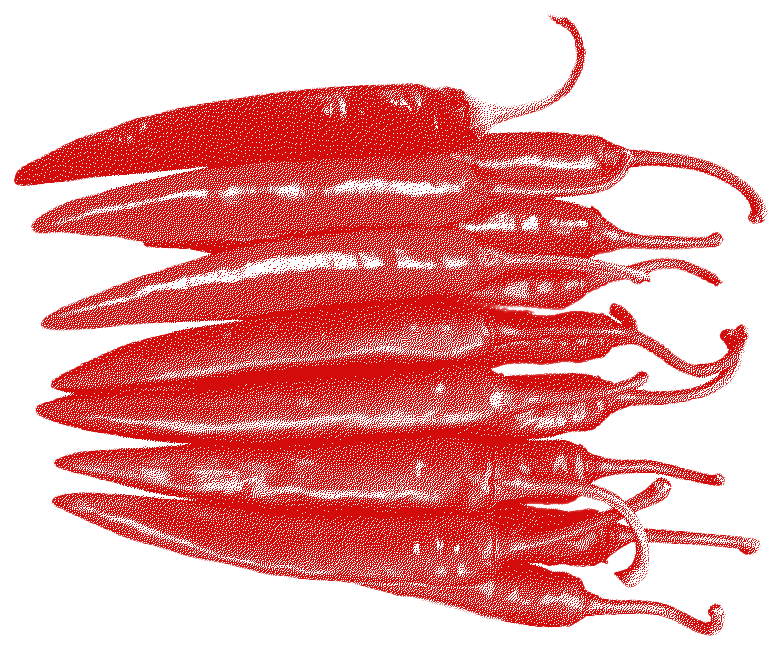
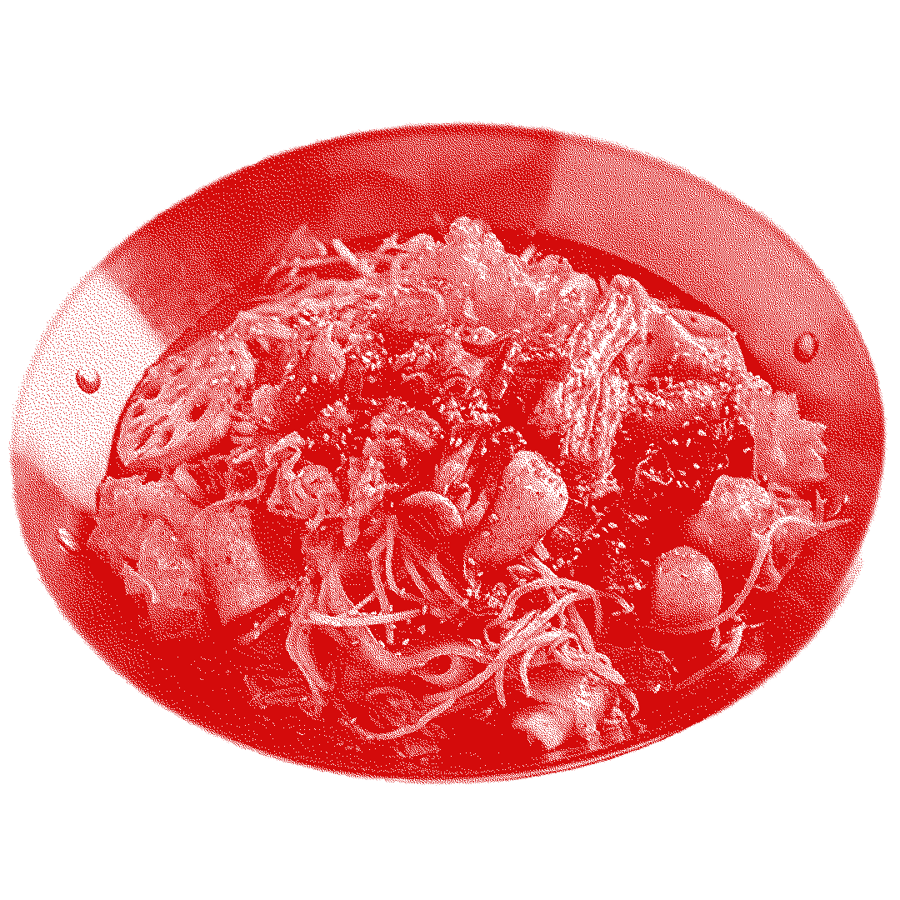

氣內食
기내식
: 기분 안의 식사
매운맛
辛
Spicy
 
‘속에서 천불이 난다’라는 표현이 있지요?
뱃속에 커다란 불덩어리를 삼킨 것도 같은,
자기주장이 강한 메뉴입니다.
나에게 일어나는 작은 일들, 심지어는 내 일이 아닌 일에도
얼굴과 머리에는 열이 오르고, 인내심은 바닥이 납니다.
그런데 이 맛은 중독성도 가지고 있어서,
한번 맛보면 헤어나오기 어렵다는 이야기도 있네요.
← 이전
맛있게 드셨나요?